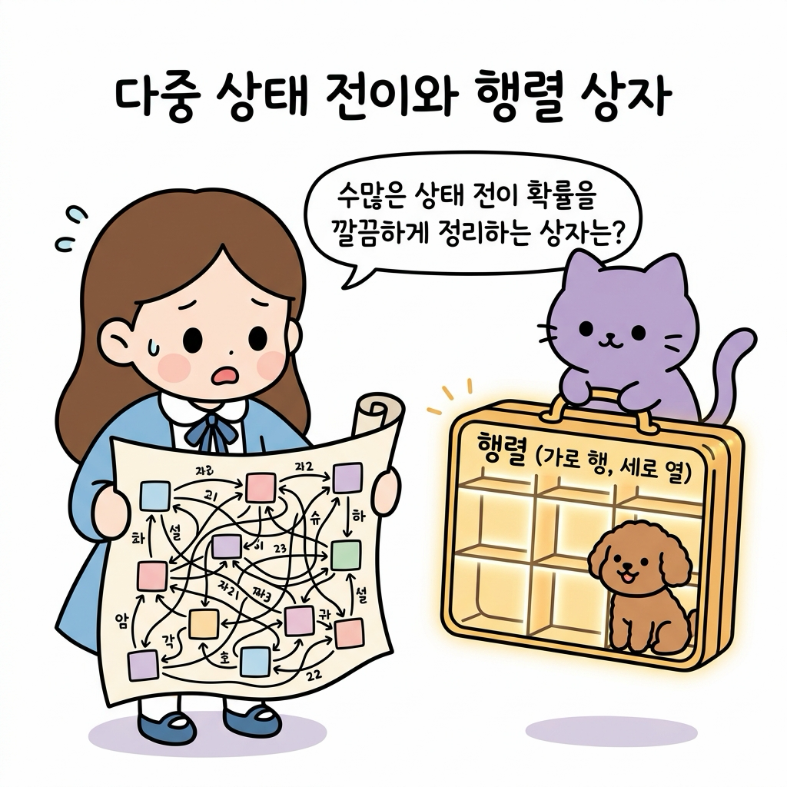
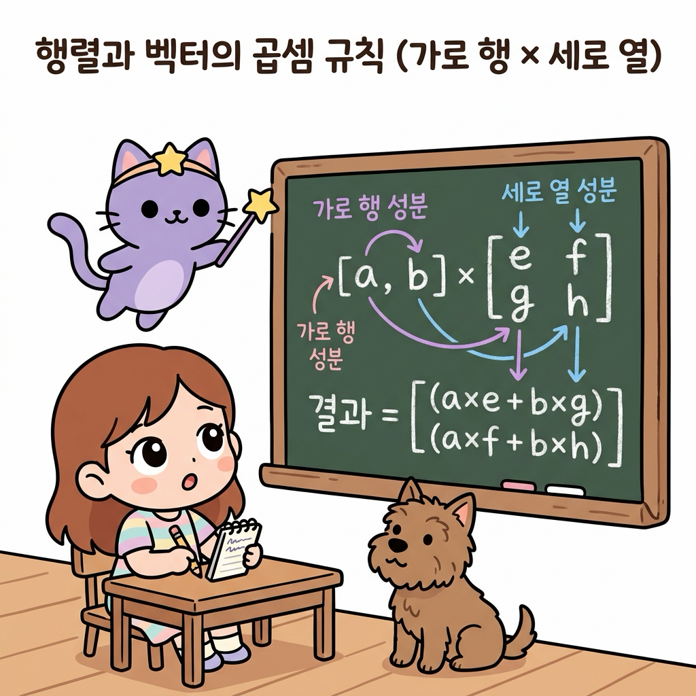

02.12 행동과 상태 전이를 묶는 행렬의 기초
이 장에서는 복잡한 다중 상태 전이 확률을 사각형 격자 상자에 담아내는 행렬(Matrix)과 벡터(Vector)의 정의를 배우고, 행렬-벡터 곱셈 연산 메커니즘을 마스터하여 마르코프 체인(Markov Chain)과 강화학습 상태 전이 모델의 강력한 선형대수적 표현력을 체득합니다.
02.12.1 상태들의 지도를 한 상자에 담는 행렬의 연금술
강화학습의 격자 세상이나 마르코프 의사결정 과정(MDP)에서 환경의 방(상태)이 10개, 100개로 늘어나면, 각 상태 사이의 조건부 전이 확률을 수식으로 하나하나 나열하기가 불가능해집니다.
“지니! 에이전트가 탐험할 수 있는 방이 10개로 늘어나니까, 방마다 어디로 미끄러질지 적어놓은 화살표와 확률 숫자들이 너무 복잡하게 엉켜버렸어! 이걸 깔끔하게 가방 하나에 쏙 정리하는 마법 상자는 없을까?”
도로시가 방마다 복잡하게 얽혀 있는 전이 확률 지도책을 넘기며 한숨을 폭 쉬었습니다. 토토도 지도 위에 털썩 주저앉아 곤란한 표정을 지었습니다. 지니가 허공에서 반짝이는 격자 모양의 요술 가방을 꺼내 보였습니다.

그림 02-12-1 수많은 상태 사이의 전이 확률들을 바둑판 모양의 칸(가로 행, 세로 열)에 일목요연하게 정리하는 행렬 상자의 개념을 살펴보는 지니와 도로시, 토토“도로시! 수학에는 수많은 숫자 데이터를 사각형 바둑판 칸에 질서정연하게 배열하여 단 한 줄의 식으로 연산하는 아주 강력한 도구가 있단다. 바로 행렬(Matrix)과 벡터(Vector)야. 복잡한 수백 개의 전이 확률을 이 상자 안에 넣어두면, 단 한 번의 곱셈으로 미래의 모든 상태 확률 분포를 깔끔하게 계산해낼 수 있지!”
2.12.1.1 행렬과 벡터의 구조
- 행렬(Matrix): 수나 문자를 직사각형 모양으로 배열하여 괄호(대괄호)로 묶은 것입니다.
- 행(Row, 가로줄): 행렬의 가로 방향 줄
- 열(Column, 세로줄): 행렬의 세로 방향 줄
- M개의 행과 N개의 열을 가진 행렬을 M × N 행렬이라 부릅니다.
- 벡터(Vector): 단 한 줄로만 이루어진 특수한 행렬입니다.
- 행 벡터(Row Vector): 가로로 1줄만 있는 $1 \times N$ 벡터 (예: 현재 상태 확률 분포)
- 열 벡터(Column Vector): 세로로 1줄만 있는 $M \times 1$ 벡터
02.12.2 행렬과 벡터의 곱셈 연산 메커니즘
행렬 곱셈은 앞 벡터(또는 행렬)의 가로줄(행) 성분들과 뒤 행렬의 세로줄(열) 성분들을 순서대로 짝지어 곱한 뒤, 그 결과들을 모두 더하여 합산(내적)하는 규칙을 따릅니다.

그림 02-12-2 행 벡터의 가로 행 성분과 전이 행렬의 세로 열 성분을 차례대로 짝지어 곱한 뒤 모두 더해주는 행렬-벡터 곱셈의 연산 메커니즘 \[\mathbf{x} \mathbf{P} = \begin{bmatrix} a & b \end{bmatrix} \begin{bmatrix} e & f \\ g & h \end{bmatrix} = \begin{bmatrix} (a \times e + b \times g) & (a \times f + b \times h) \end{bmatrix}\]- 곱셈의 성립 조건: 앞 행렬의 열 개수와 뒤 행렬의 행 개수가 반드시 일치해야 합니다. ($1 \times 2$ 벡터 $\times$ $2 \times 2$ 행렬 ➔ $1 \times 2$ 결과 벡터)
02.12.3 마르코프 체인과 상태 전이 확률 행렬
강화학습의 핵심 뼈대인 마르코프 체인(Markov Chain)에서 상태 전이 확률 행렬을 통해 미래 확률을 예측하는 실전 과정을 살펴봅니다.
2.12.3.1 날씨 상태 전이 모델
어느 마법 마을의 날씨 상태가 [맑음, 비] 2가지만 존재한다고 가정합니다.
- 상태 전이 확률 행렬 $\mathbf{P}$:
\(\mathbf{P} = \begin{bmatrix} 0.7 & 0.3 \\ 0.4 & 0.6 \end{bmatrix}\)
- 1행: 오늘 맑음일 때 ➔ 내일 맑을 확률 0.7, 내일 비 올 확률 0.3
- 2행: 오늘 비일 때 ➔ 내일 맑을 확률 0.4, 내일 비 올 확률 0.6
- 중요 성질: 각 행의 원소들의 합은 항상 1.0(100%)입니다.
- 오늘의 날씨 확률분포 벡터 $\mathbf{x}_0$: \(\mathbf{x}_0 = \begin{bmatrix} 0.6 & 0.4 \end{bmatrix} \quad (\text{오늘 맑을 확률 } 60\%, \text{비 올 확률 } 40\%)\)
그림 02-12-3 오늘의 확률분포 벡터(x₀)와 전이 확률 행렬(P)을 단 한 번 곱하여 내일의 날씨 확률분포(맑음 58%, 비 42%)를 도출하는 마르코프 체인 연산
2.12.3.2 1단계 및 다단계 상태 전이 계산
내일 날씨의 확률분포 $\mathbf{x}_1$은 행렬 곱셈 한 번으로 가뿐히 계산됩니다.
\[\mathbf{x}_1 = \mathbf{x}_0 \mathbf{P} = \begin{bmatrix} 0.6 & 0.4 \end{bmatrix} \begin{bmatrix} 0.7 & 0.3 \\ 0.4 & 0.6 \end{bmatrix}\]- 내일 맑을 확률 (1번째 원소): \(0.6 \times 0.7 + 0.4 \times 0.4 = 0.42 + 0.16 = \mathbf{0.58}\ (58\%)\)
- 내일 비 올 확률 (2번째 원소): \(0.6 \times 0.3 + 0.4 \times 0.6 = 0.18 + 0.24 = \mathbf{0.42}\ (42\%)\)
- 내일 날씨 벡터: $\mathbf{x}_1 = \begin{bmatrix} 0.58 & 0.42 \end{bmatrix}$
“와! 모레 날씨 $\mathbf{x}_2$를 구하고 싶으면 $\mathbf{x}_1 \mathbf{P} = \mathbf{x}_0 \mathbf{P}^2$로 행렬만 거듭제곱하면 되네! 수많은 단계의 미래 상태도 행렬의 거듭제곱으로 단숨에 풀리는구나!”
도로시가 감탄하며 노트를 정리했습니다.
02.12.4 파이썬 NumPy로 구현하는 상태 전이 시뮬레이터
파이썬의 선형대수 표준 라이브러리인 numpy를 활용하여 상태 전이 행렬의 곱셈과 장기적 정상 상태(Stationary Distribution) 수렴을 확인합니다.
import numpy as np
# 1. 오늘 날씨 상태 확률분포 벡터 x0 (맑음 60%, 비 40%)
x0 = np.array([0.6, 0.4])
# 2. 상태 전이 확률 행렬 P
# 행 0: 오늘 맑음 -> [내일 맑음 0.7, 내일 비 0.3]
# 행 1: 오늘 비 -> [내일 맑음 0.4, 내일 비 0.6]
P = np.array([
[0.7, 0.3],
[0.4, 0.6]
])
print("=== 마르코프 체인 상태 전이 계산 ===")
print("오늘 날씨 분포 (x0):", x0)
# 1일 후 내일 날씨 x1 = x0 @ P
x1 = np.dot(x0, P)
print(f"1일 후 날씨 분포 (x1): 맑음 {x1[0]:.4f}, 비 {x1[1]:.4f}")
# 2일 후 모레 날씨 x2 = x1 @ P = x0 @ P^2
x2 = np.dot(x1, P)
print(f"2일 후 날씨 분포 (x2): 맑음 {x2[0]:.4f}, 비 {x2[1]:.4f}")
# 10일 후 장기 정상 상태 분포 x10
x_current = x0.copy()
for day in range(1, 11):
x_current = np.dot(x_current, P)
print(f"\n10일 후 수렴 분포 (x10): 맑음 {x_current[0]:.4f}, 비 {x_current[1]:.4f}")
print(f"이론적 정상 분포 (4/7, 3/7): 맑음 {4/7:.4f}, 비 {3/7:.4f}")
[실행 결과]
=== 마르코프 체인 상태 전이 계산 ===
오늘 날씨 분포 (x0): [0.6 0.4]
1일 후 날씨 분포 (x1): 맑음 0.5800, 비 0.4200
2일 후 날씨 분포 (x2): 0.5740, 비 0.4260
10일 후 수렴 분포 (x10): 맑음 0.5714, 비 0.4286
이론적 정상 분포 (4/7, 3/7): 맑음 0.5714, 비 0.4286
💡 코드 해석: 날이 지날수록 날씨 확률 분포는 초기 조건(맑음 60%)과 상관없이 시스템 고유의 고정점인 정상 상태 분포($\approx [0.5714, 0.4286]$)로 수렴합니다. 이는 강화학습에서 정책(Policy)이 수렴할 때의 장기 정상 상태 분석에 핵심적으로 활용됩니다.
02.12.5 실전 예제
2.12.5.1 문제 1 (2×2 행렬-벡터 곱셈 계산)
현재 에이전트의 위치 확률분포 벡터 $\mathbf{x} = \begin{bmatrix} 0.5 & 0.5 \end{bmatrix}$ 와 이동 전이 행렬 $\mathbf{P} = \begin{bmatrix} 0.8 & 0.2 \ 0.3 & 0.7 \end{bmatrix}$ 의 행렬 곱 $\mathbf{x} \mathbf{P}$를 계산하시오.
풀이: 가로 행 성분과 세로 열 성분의 내적을 전개합니다:
- 결과의 1번째 원소 (다음 상태가 1번 방일 확률): \(0.5 \times 0.8 + 0.5 \times 0.3 = 0.40 + 0.15 = \mathbf{0.55}\)
- 결과의 2번째 원소 (다음 상태가 2번 방일 확률): \(0.5 \times 0.2 + 0.5 \times 0.7 = 0.10 + 0.35 = \mathbf{0.45}\)
정답: $\begin{bmatrix} 0.55 & 0.45 \end{bmatrix}$
2.12.5.2 문제 2 (2단계 후 상태 전이 확률 계산)
문제 1의 시스템에서 2단계 후의 상태 확률분포 벡터 $\mathbf{x}_2$를 구하시오.
풀이: 1단계 결과 벡터 $\mathbf{x}_1 = \begin{bmatrix} 0.55 & 0.45 \end{bmatrix}$ 에 전이 행렬 $\mathbf{P}$를 한 번 더 곱합니다:
- 1번째 원소: \(0.55 \times 0.8 + 0.45 \times 0.3 = 0.44 + 0.135 = \mathbf{0.575}\)
- 2번째 원소: \(0.55 \times 0.2 + 0.45 \times 0.7 = 0.11 + 0.315 = \mathbf{0.425}\)
정답: $\begin{bmatrix} 0.575 & 0.425 \end{bmatrix}$
02.12.6 핵심 요약
그림 02-12-4 행렬의 가로 행과 세로 열 구조, 가로×세로 행렬 곱셈 연산법, 마르코프 체인의 상태 전이 방정식 $\mathbf{x}_1 = \mathbf{x}_0 \mathbf{P}$를 완벽히 마스터한 도로시와 지니, 토토
- 행렬과 벡터: 행렬은 수치를 가로(행)와 세로(열)로 배열한 직사각형 상자이며, 상태 확률 분포는 1줄짜리 행 벡터로 표현한다.
- 행렬 곱셈 규칙: 앞 행렬의 가로(행) 성분과 뒤 행렬의 세로(열) 성분을 순서대로 곱해 모두 더해주는 내적 방식을 따른다.
- 상태 전이 방정식: 현재 확률분포 $\mathbf{x}_0$에 전이 확률 행렬 $\mathbf{P}$를 곱하면 다음 상태의 확률분포 $\mathbf{x}_1 = \mathbf{x}_0 \mathbf{P}$가 단 한 줄로 도출된다.
- 강화학습과의 연계: 수많은 복잡한 상태 전이와 보상 구조를 선형대수의 행렬 연산으로 추상화하여 대규모 환경에서도 고속 벡터 연산을 가능하게 한다.